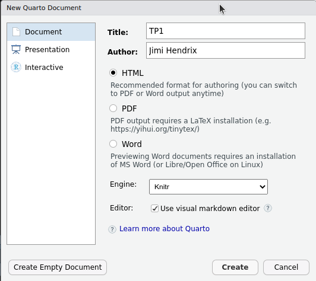
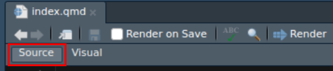
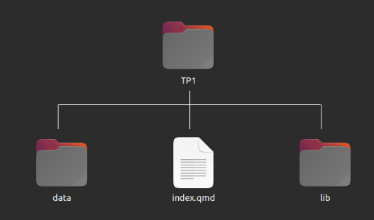
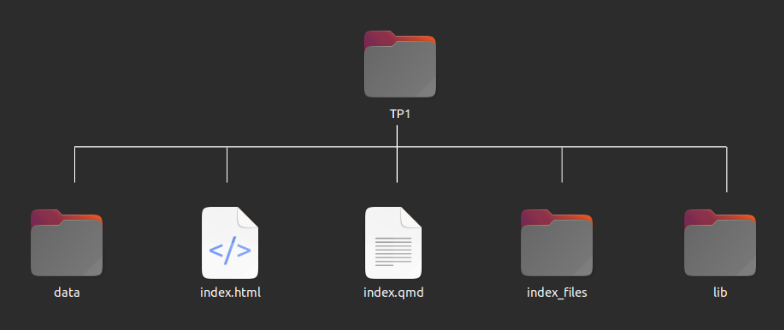
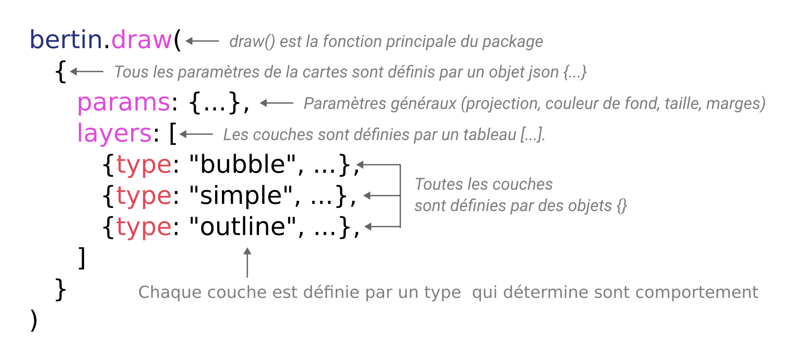

classeur = FileAttachment("data/afrika.xlsx").xlsx()TP1 - Savoir faire des cartes interactives avec Quarto et bertin
L’objectif de ce TP est d’apprendre à créer des cartes interactives avec Quarto et la bibliothèque JavaScript bertin.
Responsables pédagogiques
Manhamady OUEDRAOGO (Burkina Faso) & Nicolas LAMBERT (France)
Ont participé à l’élaboration de ce module
Claude GRASLAND (France), Souleymane Sidi TRAORE (Mali), Malika MADELIN (France), Sébastien REY-COYREHOURCQ (France), Vakaramoko BAMBA (Côte d’Ivoire), Hugues PECOUT (France), Yentougle MOUTORE (Togo), Bénédicte GARNIER (France), Côomlan Charles HOUNTON (Bénin), Pauline GLUSKI (France).
1. Démarrer avec Quarto
1.1 Environnement logiciel.
Ce TP s’effectue avec le logiciel Quarto. Pour l’installer, vous pouvez utiliser les liens suivants :
- Windows : quarto-1.2.335-win.msi
- Mac OS : quarto-1.2.335-macos.pkg
- Ubuntu 18+/Debian 10+ : quarto-1.2.335-linux-amd64.deb
- Autre : Voir sur quarto.org
Puis, vous avez besoin d’une interface de développement pour écrire le code et visualiser le résultat. Vous avez le choix.

Dans ce TP, nous privilégions l’utilisation du logiciel Rstudio. Pour le télécharger et l’installer, cliquez sur ce lien.
1.2 Créer un document Quarto
- Sur votre ordinateur, creez un dossier TP1 à l’emplacement de votre choix.
- Ouvrez le logiciel RStudio
- Créez un document Quarto (file > New File > Quarto Document)

- Cliquez sur “Create Empty Document” en bas à gauche.
- Mettez-vous en mode source

Vous obtenez un fichier contenant les lignes suivantes :
---
title: "Untitled"
format: html
editor: visual
---- Choisissez un titre
- Sauvegardez le fichier index.qmd dans le dossier TP1.
- Dans le repertoire TP1, créez également un sous répertoire data pour mettre les données et éventuellement un repertoire lib pour un stocker les bibliothèques JavaScript que nous allons utiliser.

1.3 Rappel des principes
Dans ce TP, nous allons réaliser des cartes avec Observable JavaScript (ou ojs). Rappelons que l’ojs est un ensemble d’améliorations apportées à JavaScript avec l’objectif d’en faire un langage dédié à la visualisation de données pour le web. Ce langage est complètement intégré dans Quarto.
Les caractéristiques de l’ojs sont les suivantes :
- Il s’agit de JavaScript + des bibliothèques préchargées comme
Plot&d3js📊 - Tout est réactif 🔥 et rejoué en temps réel
- L’ordre des cellules n’a pas d’importance 🤯
- Chaque début de ligne identifie une cellule ojs. Le nom de ces cellules doit être unique pour l’ensemble du document.
Dans Quarto, toutes les instructions à suivre s’écrivent dans des chunks ojs
```{ojs}
```Pour chaque chunck, vous pouvez définir avec echo si vous souhaitez que le code s’affiche ou non dans votre notebook final. Avec eval, vous choisissez si le code doit s’exécuter ou non.
```{ojs}
//| echo: false
//| eval: true
```Pour générer le document, il faut clicher sur le bouton Render ou utiliser le racourci clavier Ctrl+Shift+K.
Une fois que vous avez cliqué sur Render, la page web s’affiche dans la panneau Viewer et deux nouveaux éléments sont créés dans votre répertoire de travail : le fichier index.html et le dossier index_files.

Vous pouvez aussi cliquer sur l’icône voir das une nouvelle fenêtre pour visualiser votre document dans votre navigateur web habituel.

N’oubliez pas de sauvegarder votre document régulièrement.
1.4 Documentation et exemples
Au fil de ce notebook, vous pourrez vous référer à des éléments de documentation en cliquant sur cet icône.
Vous pourrez également accéder à des exemples pédagogiques et des demos en ligne en cliquant sur celui-là.
2. Les données
Le jeu de données utilisé concerne les pays africains. Nous avons un fond de carte contenant la géométrie des pays. Et un tableau de données issu du Human Development Report 2020 et du CEPII, contenant différentes données statistiques, qualitatives ou quantitatives.
Téléchargez les données et mettez-les dans votre repertoire data.

2.1 Import des données attributaires
Dans {ojs}, on importe les données avec l’instruction FileAttachment()
La fonction .xlsx() permet d’importer des tableurs excel.
La ligne ci-dessous permet donc d’importer un classeur excel et de l’interpréter.
classeur.sheetNames permet de voir la liste des feuilles contenues dans le classeur excel
classeur.sheetNamesVisualisons les metadonnées avec Inputs.table()
Inputs.table(classeur.sheet("meta", {headers:true}))Et créons une variable data contenant les données de feuille data
data = classeur.sheet("data", {headers:true})Visualisons-la.
Inputs.table(data)2.2 Import des données géométriques
Import du fond de carte
countries = FileAttachment("data/africa.json").json()Le fond de carte est au format geoJSON
countriesPour la visualiser, on a besoin d’importer une bibliothèque de cartographie. Ici, on choisit la bibliothèque bertin On l’importe grace à l’instruction require().
bertin = require("bertin@1.6.3")Nb : pour travailler offline, vous pouvez aussi télécharger la librairie bertin ici et indiquer son emplacement. Par exemple si vous le mettez dans le repertoire lib :
bertin = require("./lib/bertin.js")La fonction quickdraw() permet de visualiser rapidement n’importe quel fond de carte. Le second paramètre permet de définir la largeur de la carte (en pixels). La hauteur est déduite automatiquement. La couleur est choisie aléatoirement.
bertin.quickdraw(countries, 500)Pour récupérer la table attributaire, on utilise l’instruction bertin.properties.table() . Puis, on peut la visualiser sous forme de tableau avec Inputs.table().
Inputs.table(bertin.properties.table(countries))2. Création de cartes statiques
2.1 Jointure
La première chose à faire est de réaliser une jointure entre les données et le fond de carte. Pour cela, on va procéder en 2 étapes. bertin.match permet de tester et visualiser le compatibilité entre le fond de carte et le tableau de données. bertin.merge permet d’effectuer réellement cette jointure.
test = bertin.match(countries, "id", data, "iso3")On constate que le jeu de données et le fond de carte sont compatibles à 98%. Toutes les données disponibles dans le jeu de données peuvent être jointe avec le fond de carte (49/49). Seule une unité géographique dans le fond de carte n’a pas d’équivalent dans le tableau de données (49/50). Pour savoir de quelle unité il s’agit, on peut taper test.unmatched_geom
test.unmatched_geomIl s’agit du Sahara Occidental. Il n’y a en effet pas de données pour cette unité géographique. On peut donc décider d’effectuer la jointure pour de bon et de créer un nouvel objet africa. Cet objet contient à la fois les données et les géométries.
africa = bertin.merge(countries, "id", data, "iso3")2.2 Réaliser des cartes avec bertin
Pour réaliser une carte avec la bibliothèque bertin, on utilise la fonction draw() .
La fonction prend en entrée un objet avec la structure suivante :

Ainsi, on peut écrire :
bertin.draw({
params : {width : 500, background: "#CCC", margin: 20},
layers :
[
{geojson: africa, fill: "#e07edd"},
{type: "header", text: "Le continent africain"},
{type: "scalebar"}
]
})💡 Les noms des paramètres de la fonction draw reprennent la plupart du temps les noms des attributs SVG. Par exemple :
fillpermet de définir la couleur de fond d’un objetstrokepermet de définir la couleur de contour d’un objet
Pour les attributs contenant un tiret, la règle classique en JavaScript est de remplacer le tiret par une écriture en CamelCase. Ainsi :
fillOpacitypermet de modifier l’attribut fill-opacity qui définit la transparence du fond.strokeOpacitypermet de modifier l’attribut stroke-opacity qui définit la transparence du contour.strokeWidthpermet de modifier l’attribut stroke-width qui définit la l’épaisseur des traits.strokeDasharraypermet de modifier l’attribut stroke-dasharray qui permet de définir des motifs de pointillés.- Etc.
Tous les paramètres sont détaillés dans la documentation
Nous allons à présent réaliser des cartes thématiques.
Rappel : le type de carte thématique qu’on va réaliser dépend du type de données à représenter.
2.3. Cartographier des données quantitatives absolues (stock)
En cartographie, on représente des données quantitatives absolues avec la variable visuelle TAILLE. Pour avoir des cercles proportionnels, dans bertin, on utilisera le type bubble
Trois paramètres sont absolument nécessaires à l’affichage de la couche cercles proportionnels :
type: le type de représentation (icibubble)geojson: l’objet geoJSON contenant les géométries et les données attributaires.values: le nom de la variable à cartographier.
Le reste est optionnel.
Dans l’exemple ci-dessous, on utilise aussi les types header et scalebar qui permettent respectivement d’ajouter un titre et une barre d’échelle.
bertin.draw({
params : {width : 500, background: "#CCC", margin: 20},
layers :
[
{
type : "bubble",
geojson: africa,
values: "POP",
k: 50, // rayon du plus grand cercle
fill: "red",
leg_x: 30,
leg_y: 300,
leg_round: 0,
leg_title: "Nombre d'habitants\n (en millions)"
},
{geojson: africa, fill: "#DDD"},
{type: "header", text: "Le continent africain"},
{type: "scalebar"}
]
})D’autres modes de représentation auraient bien sûr été possibles. On aurait également pu faire des squares ou des spikes
2.4 Cartographier des données qualitatives nominales
Il y a plusieurs façons de cartographier des données qualitatives nominales. Sur écran, en cartographie numérique, on choisira la plupart du temps la variable visuelle COULEUR (teinte).
Dans bertin, il s’agit donc de faire varier la propriété fill et de la faire varier en fonction d’une donnée qualitative. Pour cela, on utilise le type typo à l’intérieur de la propriété fill.
bertin.draw({
params : {width : 500, background: "#CCC", margin: 20},
layers :
[
{
geojson: africa,
fill: {
type : "typo",
values: "SUBREG",
leg_x: 30,
leg_y: 330,
leg_title: "Sub regions",
txt_missing: "Pas de données",
pal: "Tableau10",
}
},
{type: "header", text: "Le continent africain"},
]
})La palette de couleurs par défaut est Tableau10. Mais il est possible d’en choisir une autre : Category10, Accent, Dark2, Paired, Pastel1, Pastel2, Set1, Set2 ou Set3 .
Il est aussi possible de définir vos propres couleurs en replaçant pal: "Tableau10" par colors: ["#8dd3c7","#ffffb3","#bebada","#fb8072","#80b1d3"].
2.5 Cartographier des données quantitatives relatives (ratio, indice)
Il y a plusieurs façons de cartographier des données quantitatives relatives. Sur écran, en cartographie numérique, on choisira la plupart du temps de réaliser une carte choroplèthe avec des couleurs ordonnées. Un étape de discrétisation préalable est nécessaire. Elle nécessite d’étudier la forme de la distribution statistique. Pour celà, on utilisera la librairie Plot disponible nativement dans les celles {ojs}.
Il y a plusieurs façons de visualiser la forme d’une distribution Ici, on choisira un graphique avec des points et une transformation de type dodge.
Plot.plot({
height: 60,
marks: [
Plot.dotX(
data,
Plot.dodgeY({ x: "IDH", fill: "red" })
)
]
})Pour faire une carte choroplèthe dans bertin, on fait varier comme précédemment la propriété fill. Pour cela, on utilise le type choro
Les méthodes de discrétisation disponibles son celles contenues dans la libraire statsbreaks : quantile, q6, geometric, jenks, msd (moyenne écart-type) et equal. Pour les couleurs, de nombreuses palettes sont disponibles : Blues, Greens, Greys, Oranges, Purples, Reds, BrBG, PRGn, PiYG, PuOr, RdBu, RdYlBu, RdYlGn, Spectral,Turbo,Viridis,Inferno, Magma, Plasma, Cividis, Warm, Cool, CubehelixDefault, BuGn, BuPu, GnBu, OrRd, PuBuGn, PuBu, PuRd, RdPu, YlGnBu, YlGn, YlOrBr, YlOrRd, Rainbow, Sinebow
Par défaut, la méthode choisie est quantile, la palettes est Blues et le nombre de classes est égal à 5.
bertin.draw({
params : {width : 500, background: "#CCC", margin: 20},
layers :
[
{
geojson: africa,
fill: {
type : "choro",
values: "IDH",
leg_x: 30, // position de la légende en x
leg_y: 330, // position de la légende en y
leg_round: 2, // 2 chiffres après la virgule
leg_title: "IDH",
txt_missing: "Pas de données",
method: "quantile",
nbreaks: 4,
colors: "OrRd"
}
},
{type: "header", text: "Indicateur de développement humain"},
]
})3. Faire des cartes interactives
Avec Observable JavaScript, nous sommes dans un écosystème pleinement réactif 🔥 Cela signifie qu’il est possible de proposer à l’utilisateur des possibilités d’interaction avec la carte.
3.1 Une carte par symbols proportionnels
Reprenons le cas de de la carte par symboles proportionnels de tout à l’heure et rendons-là interactive avec des Inputs
viewof k = Inputs.range([10, 75], { label: "Taille", step: 1, value: 40 })
viewof symbol = Inputs.radio(["bubble", "square", "spikes"], { label: "Symbole", value: "bubble" })
viewof color = Inputs.color({label: "Couleur", value: "#CC0000"})
viewof toggle = Inputs.toggle({label: "Ecarter les symboles", value: false})Puis, nous recopions le code de la carte en remplaçant les valeurs en dur par les valeurs issues des Inputs.
Il est également possible d’ajouter des infobulles grâce à la propriété tooltip
bertin.draw({
params : {width : 500, background: "#CCC", margin: 20},
layers :
[
{
type : symbol,
geojson: africa,
values: "POP",
k: k, // rayon du plus grand cercle
fill: color,
stroke: "white",
dorling: toggle,
leg_x: 30,
leg_y: 300,
leg_round: 0,
leg_title: "Nombre d'habitants\n(en millions)",
//tooltip: ["$name", "$POP"]
tooltip: ["$name", d => Math.round(d.properties.POP) + " millions d'habitants"]
},
{geojson: africa, fill: "#DDD"},
{type: "header", text: "Le continent africain"},
{type: "scalebar"}
]
})3.2 Carte qualitative
Il peut être souvent intéressant de demander à l’utilisateur de choisir lui même l’indicateur qu’il souhaite cartographier. Pour cela, on peut le proposer dans une liste déroulante . Par exemple, on peut mettre dans un array , les indicateurs qualitatifs du tableau de données issus du CEPII :
indicators = ["LOCKED", "COLFRA", "COLGBR", "LANGFR", "LANGEN"]Puis, les utiliser dans une liste déroulante
viewof myindicator1 = Inputs.select(indicators, {value: "LOCKED", label: "Choisissez votre indicateur"})Si on veut les labels dans la liste déroule, c’est un petit plus compliqué. Une façon de faire est de créer un array contenant à la fois les noms de variable et les labels.
indicators2 = [
["Pays enclavé", "LOCKED"],
["Colonisation par la France", "COLFRA"],
["Colonisation par le Royaume-Uni", "COLGBR"],
["Langue officielle française", "LANGFR"],
["Langue officielle anglaise", "LANGEN"]
]Puis, on utilise utilise cet array sous forme de Map JavaScript (clef/valeur).
viewof myindicator2 = Inputs.select(new Map(indicators2), {value: "LANGEN", label: "Choisissez votre indicateur", width:300})On peut récupérer le label de la façon suivante :
mytitle = indicators2.find((d) => d[1] == myindicator2)[0]Dans bertin, il ne reste plus qu’à utiliser myindicator2 comme nom de variable.
bertin.draw({
params : {width : 500, background: "#CCC", margin: 20},
layers :
[
{
geojson: africa,
fill: {
type:"typo",
values: myindicator2,
colors : ["#3baee3","#DDD"],
order:[1,0]
}
},
{type: "header", text: mytitle},
{type: "scalebar"}
]
})3.3 Habillage et mise en page
Ici, on ne souhaite plus voir “flotter” l’Afrique. Donc, on importe un nouveau fichier contenant les pays du Monde. Cette couche servira à l’habillage. Dans les paramètres généraux de la carte, il faudra bien penser à définir l’extent (l’étendue) pour que la carte ne s’affiche pas à l’échelle mondiale.
world = FileAttachment("data/world.json").json()De plus, pour améliorer la carte précédente, on rajoute quelques couches d’habillage comme shadow et hatch
Puis, pour faire varier la carte précédente, on choisi de représenter les données avec le type dotcartogram qui décompose chaque cercle en un nombre de points de même valeurs, placés sur le centroïde . Le reste s’écrit grosso modo comme la carte précédente.
viewof radius = Inputs.range([1, 15], { label: "Rayon", step: 0.5, value: 7})
viewof onedot = Inputs.range([1, 20], {
label: "Valeur du point (en millions)",
step: 1,
value: 10
})
bertin.draw({
params : {width : 500, background: "#8ddaf0", margin: 20, extent: africa},
layers :
[
{type: "header", text: "Le continent africain"},
{
type : "dotcartogram",
geojson: africa,
values: "POP",
radius: radius,
onedot: onedot,
fill: color,
stroke: "white",
dorling: toggle,
leg_x: 30,
leg_y: 300,
leg_round: 0,
leg_title: "Nombre d'habitants\n(en millions)",
//tooltip: ["$name", "$POP"]
tooltip: ["$name", d => Math.round(d.properties.POP) + " millions d'habitants"]
},
{geojson: africa, fill: "#DDD"},
{type:"shadow", geojson:africa},
{geojson:world, fill:"white", fillOpacity:0.5, stroke: "none"},
{type:"hatch"},
{type: "scalebar"}
]
})4. À vous de jouer
Choisissez une donnée quantitative relative à cartographier dans la liste suivante (sauf l’idh):
Réalisez une carte choropèthe avec bertin en faisant varier :
NB : N’oubliez pas d’analyser la distribution statistique pour choisir la bonne méthode de discrétisation.